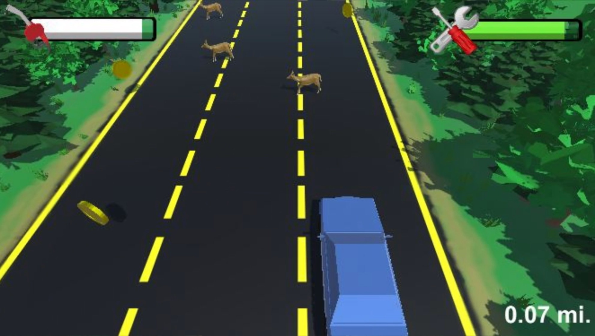

Role: Game Developer & 3D Artist
Type: Personal Project
Team: Kacper Mocarski (University of Illinois Chicago CS)
Description:
During the summer of 2020, my friend Kacper Mocarski wanted to work on a new project and learn something new while the world was in lockdown in the beginning months of the pandemic. We decided to make a project in the game engine Unity.
This process began with several zoom calls trying to come up with ideas. We applied the design thinking mindset by asking other students in our school what makes games addicting, as our target audience was teenagers. Eventually, we decided on making a 3D game where the player would be driving down a highway where there are a lot of deer (or other animals) crossing the road. You would have to manage your fuel and your car's health while picking up power ups to see how long you could last.
Through this, we also learned how to design our own 3D models for cars and animals in the 3D modeling software Blender. I ended up making several animals, landscapes, and cars that ended up going into the final game. This experience was valuable because it showed the amount of work that goes into
making a videogame because in between sprites, graphics, music, sound effects, and functionality, there is so much that goes into making a great game.

Deer Dash game scene.
I did well at seeking out good sources to learn from for a variety of topics regarding the game development. I had to learn C# for programming, Unity for using a game engine, and Blender for creating 3D models for the game, forcing me to learn what helps me learn best.
I did well at coordinating working with my friend to make sure that we each had features we could keep working on. We kept our tasks organized on Trello, and we also learned how to manage sharing/merging code using GitHub.
I enjoyed trying to manage every aspect of the game from audio to collisions because it made me realize the complexity of creating a full game, giving me a new respect for game development.
Because we did not publish this project by the end of the summer, we have a 90% finished project that is sitting on the shelf because of how busy we are with school now. Unlike my LinkedIn project, there is no real driving force that is keeping us focused on continuing to develop. In the future, I feel like having a stricter release date could have gotten us to a finished product.
I learned how to use the game engine Unity from this, which is a very powerful engine, which can be used to created industry standard games.
Inherently from this, I learned how to program in C#, which was new language for me. I realized that C# has a lot of similarities to Java, which I knew at the time, so I was able to apply my understanding of Java to speed up my learning.
I learned how to create 3D models in Blender, which was completely new for me. Through practice, I began to understand the tools for creating these models and exporting them into our game.